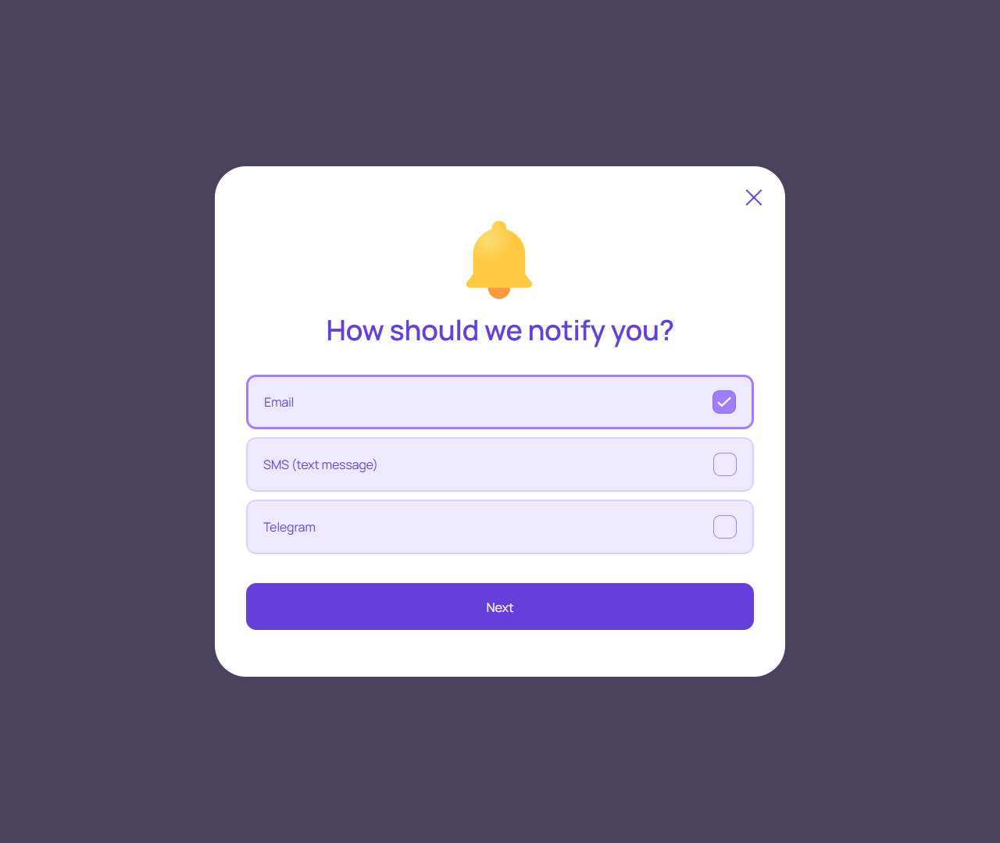
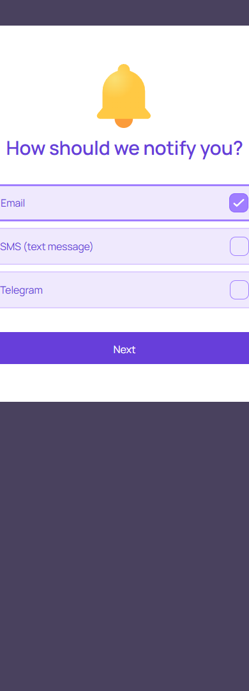

Канал уведомления
account/notification-destination.html
Выбрать куда получить уведомление о конкретном событии.
| Когда открывается | Notify |
|---|---|
| Данные | expert/event; разрешенные email/SMS/Telegram; текущий выбор. |
| Сценарий | Выбор канала → Next → соответствующее подтверждение; Close не подключает канал. |
| Переходы | Email для уведомления · Telegram для уведомления |
В макете есть SMS, но отдельного SMS-экрана в наборе нет. Нужен сценарий подтверждения номера и согласование канала; Telegram-номер сам по себе не дает bot chat_id.
Общая и предметная логика. Снимки и подписи элементов — исходная редакция макета; поздние уточнения ТЗ имеют приоритет в своей области. Это не проверка текущего сайта.
Состояние 1280 · 1280 × 1080


Элементы и ожидаемые действия
| Элемент | Название в макете | Действие | Ожидаемый результат |
|---|---|---|---|
| E001 Скрыт в этом состоянии | Notification destination status | Информационный блок/область фокуса, не самостоятельная команда. | Показывать актуальные данные соответствующего сценария; фокус или чтение не выполняют мутацию. |
| E002 Виден | Close notification destination | Закрыть локальное окно или вернуться к инициатору; Stay отменяет намерение завершить. | Вернуть фокус и исходный контекст. Не выполнять оплату, удаление или Complete. При неизвестном результате платежа сначала сверить заказ. |
| E003 Виден | Выбрать канал уведомления. | Сохранить локальный выбор; Next открывает подтверждение. Для SMS отдельный экран отсутствует; необходим согласованный сценарий. | |
| E004 Виден | SMS (text message) | Выбрать канал уведомления. | Сохранить локальный выбор; Next открывает подтверждение. Для SMS отдельный экран отсутствует; необходим согласованный сценарий. |
| E005 Виден | Telegram | Выбрать канал уведомления. | Сохранить локальный выбор; Next открывает подтверждение. Для SMS отдельный экран отсутствует; необходим согласованный сценарий. |
| E006 Виден | Next | Подтвердить выбранный канал и его принадлежность. | Сохранить подписку на событие. Telegram требует привязки к боту, одного телефона недостаточно; не показывать ложный успех. |
Состояние 390 · 390 × 1080


Элементы и ожидаемые действия
| Элемент | Название в макете | Действие | Ожидаемый результат |
|---|---|---|---|
| E001 Скрыт в этом состоянии | Notification destination status | Информационный блок/область фокуса, не самостоятельная команда. | Показывать актуальные данные соответствующего сценария; фокус или чтение не выполняют мутацию. |
| E002 Виден | Close notification destination | Закрыть локальное окно или вернуться к инициатору; Stay отменяет намерение завершить. | Вернуть фокус и исходный контекст. Не выполнять оплату, удаление или Complete. При неизвестном результате платежа сначала сверить заказ. |
| E003 Виден | Выбрать канал уведомления. | Сохранить локальный выбор; Next открывает подтверждение. Для SMS отдельный экран отсутствует; необходим согласованный сценарий. | |
| E004 Виден | SMS (text message) | Выбрать канал уведомления. | Сохранить локальный выбор; Next открывает подтверждение. Для SMS отдельный экран отсутствует; необходим согласованный сценарий. |
| E005 Виден | Telegram | Выбрать канал уведомления. | Сохранить локальный выбор; Next открывает подтверждение. Для SMS отдельный экран отсутствует; необходим согласованный сценарий. |
| E006 Виден | Next | Подтвердить выбранный канал и его принадлежность. | Сохранить подписку на событие. Telegram требует привязки к боту, одного телефона недостаточно; не показывать ложный успех. |